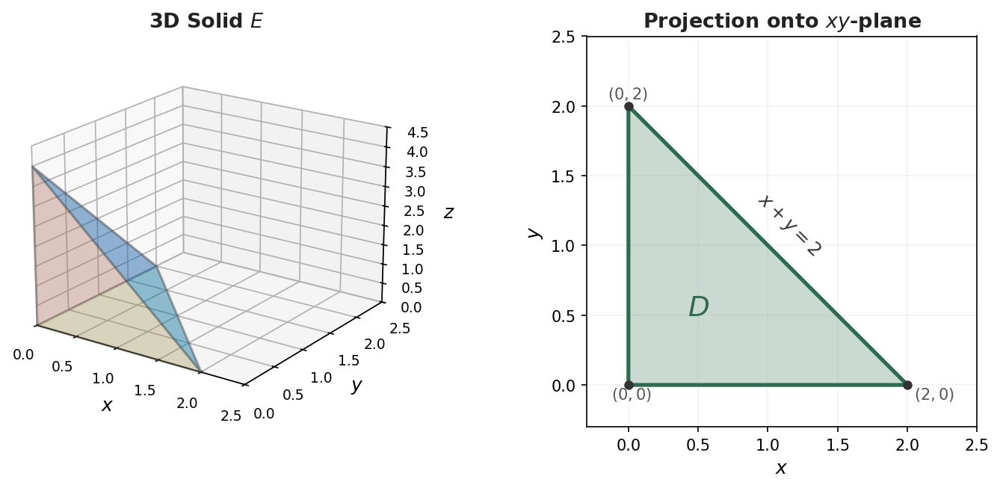

Section 15.6: Triple Integrals
Multiple Integrals
MTH 310
Calculus III
From Double to Triple
In Sections 15.1–15.5 we integrated \(f(x,y)\) over a 2D region in \(\mathbb{R}^2\). Now we go one dimension higher: integrating \(f(x,y,z)\) over a 3D solid in \(\mathbb{R}^3\).
Recall the progression:
- Calc I: \(\displaystyle\int_a^b f(x)\,dx\) — integrate over an interval (1D)
- Calc III (Ch 15.1–15.5): \(\displaystyle\iint_D f(x,y)\,dA\) — integrate over a region (2D)
- Now: \(\displaystyle\iiint_E f(x,y,z)\,dV\) — integrate over a solid (3D)
The construction is the same: partition the solid \(E\) into tiny boxes, multiply each \(f\)-value by the volume of the box \(\Delta V = \Delta x \Delta y \Delta z\), add them all up, and take the limit:
\[\iiint_E f(x,y,z)\,dV = \lim_{l,m,n \to \infty} \sum_{i=1}^{l}\sum_{j=1}^{m}\sum_{k=1}^{n} f(x_{ijk}^*, y_{ijk}^*, z_{ijk}^*)\,\Delta V\]
Interpretation: Density and Mass
What does \(\iiint_E f(x,y,z)\,dV\) mean physically?
If \(f(x,y,z) = 1\) for all points, then:
\[\iiint_E 1\,dV = \text{volume of } E\]
This is the 3D version of “area \(= \iint_D 1\,dA\).”
The most common physical interpretation: if \(f(x,y,z) = \rho(x,y,z)\) is a density function (mass per unit volume, like \(\text{g/cm}^3\) or \(\text{kg/m}^3\)), then
\[\iiint_E \rho(x,y,z)\,dV = \text{total mass of } E\]
More generally, if \(f\) gives “amount per unit volume,” then \(\iiint_E f\,dV\) gives the total amount in \(E\):
- Charge density (\(\text{C/m}^3\)) \(\to\) total charge
- Bacteria concentration (\(\text{cells/cm}^3\)) \(\to\) total bacteria count
- Probability density \(\to\) total probability
Quick Check: Interpret a Triple Integral
Suppose \(\rho(x,y,z) = 3z\) gives the density (in g/cm\(^3\)) of a solid \(E\).
What does \(\displaystyle\iiint_E 3z\,dV\) compute? What are the units?
Setting Up the Limits of Integration
Just like double integrals, we evaluate triple integrals as iterated integrals. There are six possible orders (we'll discuss this more shortly), but the strategy is the same for all of them.
The key idea: Choose one variable to integrate first (the inner integral). Its limits may depend on the other two variables. Then set up a double integral over the remaining two variables — exactly like Sections 15.2–15.3.
A common approach (inside out):
- Pick a direction to “slice” the solid. For each fixed point in the other two variables, find where the solid starts and stops in the slicing direction \(\to\) limits on the inner integral.
- Project the solid onto the plane of the other two variables \(\to\) a 2D region.
- Set up the double integral over that 2D region as in Sections 15.2–15.3.
For example, if we slice in the \(z\)-direction:
\[\iiint_E f\,dV = \iint_D \left[\int_{z_{\text{bottom}}}^{z_{\text{top}}} f\,dz\right] dA\]
where \(D\) is the shadow of \(E\) on the \(xy\)-plane.

Example 1: Triple Integral Over a Tetrahedron
Example 1
Evaluate \(\displaystyle\iiint_E 2xyz\,dV\), where \(E\) is the solid in the first octant bounded by the plane \(3x + 2y + z = 1\).
Quick Check: Describe the Solid
Describe the solid \(E\) whose volume is given by:
\[\int_0^1 \int_0^{1-x} \int_0^{2-2x-2y} dz\,dy\,dx\]
Six Orders of Integration
A triple integral can be written in six different orders:
\[dz\,dy\,dx \qquad dz\,dx\,dy \qquad dy\,dz\,dx \qquad dy\,dx\,dz \qquad dx\,dz\,dy \qquad dx\,dy\,dz\]
All six give the same answer (assuming the function is continuous), but some orders may be much easier to evaluate than others!
Strategy for choosing the best order:
- Look for limits that are constants — those variables should go on the outside
- Look for an integrand that simplifies when you integrate a particular variable first
- Sketch the solid and look for natural “top/bottom,” “left/right,” or “front/back” descriptions
For the tetrahedron below \(3x + 2y + z = 1\) (Example 1), here's the \(dy\,dz\,dx\) version:
Fix \(x\) and \(z\): \(y\) goes from \(0\) to \(\frac{1-3x-z}{2}\). Fix \(x\): \(z\) goes from \(0\) to \(1-3x\). Then: \(x\) goes from \(0\) to \(\frac{1}{3}\).
\[\int_0^{1/3}\int_0^{1-3x}\int_0^{(1-3x-z)/2} 2xyz\,dy\,dz\,dx\]
Example 2: Volume Using a Triple Integral
Example 2
Find the volume of the solid bounded by the parabolic cylinder \(y = x^2\), and the planes \(z = 0\), \(z = 4\), and \(y = 9\).
Example 3: Setting Up in Two Different Orders
Example 3
The solid \(E\) is bounded by \(z = 0\), \(y = 0\), \(z = y\), and \(y = 4 - x^2\).
(a) Set up \(\displaystyle\iiint_E 1\,dV\) in the order \(dz\,dy\,dx\).
(b) Set up the same integral in the order \(dy\,dz\,dx\).